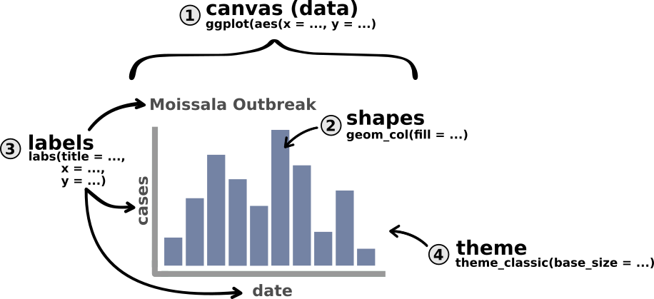

Introduction to data visualization with ggplot2
Core
Visualization
Apprenez les bases de la visualisation avec ggplot2, et créez votre première épicurve
Objectifs
- Découvrir les bases de la visualisation de données en R avec le package
{ggplot2} - Construire une courbe épidémique simple
Introduction
Pour cette dernière session, nous allons vous donner une courte introduction à la visualisation de données à l’aide du package {ggplot2}, un outil populaire. Gardez en tête que la visualisation de données est un énorme sujet, et {ggplot2} un vaste package et il n’est pas réaliste de tout traiter en trois heures. La session d’aujourd’hui est une introduction que nous espérons douce aux concepts de base de la visualisation, en prenant pour objet un graphe fameux en épidémiologie, la courbe épidémique.
Notre visualisation finale ressemblera à ceci :
Setup
Dépendances. Cette session suppose que vous savez utiliser RStudio, que vous êtes capable d’importer des données et que vous connaissez les verbes de base de manipulation des données que nous avons vus dans les sessions de base jusqu’à présent. Si vous avez besoin d’un rappel sur l’un de ces sujets, nous vous encourageons à revoir les sessions de base du parcours d’apprentissage.
Cette session utilisera la version nettoyée de l’ensemble de données Moissala sur la rougeole.
Ouvrez votre projet Rstudio du cours et créez un nouveau script appelé “courbe_epi.R” avec les métadonnées appropriées. Enregistrez le dans R/. Pour cette session, nous aurons besoin de charger les packages {here}, {rio}, {dplyr}, {lubridate}, et{ggplot2}. Ajoutez une section # IMPORTATION DONNÉES où vous importez les données nettoyées du cours (linelist_moissala_clean_FR.RDS).
Les paradigmes de la création de graphiques
In R, and indeed in everything, there are a loIl y a de nombreuses approches à la visualisation de données, en général et en R en particulier. Les deux plus grands paradigmes sont :
Tout en un : cette approche est caractérisée par l’existence d’une fonction (en général complexe) pour gérer tous les aspects de la construction d’un graphique. Base R par exemple, utilise cette approche (et n’est pas le seul).
Graphiques en couches (ou modulaires) : le graphique est décomposé en éléments (formes, titres, barres d’erreurs, thèmes…) associées à des couches. Différentes fonctions ajoutent ou modifient ces éléments. Ce paradigme est utilisé par les packages
{ggplot2},{highcharter}, ou{echarts4r}et un certain nombre d’outils modernes.
Une discussion approfondie sur les raisons pour lesquelles on peut utiliser une approche plutôt qu’une autre dépasse le cadre de ce cours, mais nous noterons que la plupart des paquets de visualisation modernes ont tendance à utiliser un [modèle en couches] {.hovertip bs-toggle=‘tooltip’ bs-title=“C’est parce que les modèles en couches ont tendance à être plus pratiques lors de la construction de visualisations complexes ou hautement personnalisées.”}. En gardant cela à l’esprit, examinons les types de couches dont nous parlons dans notre approche « en couches ».
Décomposition d’un graphique
Dans ce tutoriel, nous décomposons les graphiques en quatre composantes (couches) :
- Le canevas / les données
- Les formes géométriques primaires
- Les titres et labels
- Le thème
On peut illustrer ces composants avec la courbé épidémique schématique suivante :
La première couche, le caneva (ou la toile) est fondamentale. Comme un artiste prépare sa toile vierge et ses outils avant de se lancer dans une peinture, R doit en premier lieu créer un canevas prêt à accueillir les éléments de représentation graphique. C’est lors de la création du canevas que nous indiquons à R que nous voulons créer un graphique, et avec quelles variables.
Ici, nous allons spécifier à R que nous voulons un graphique où l’axe horizontal représente la date, et l’axe vertical représente le nombre de cas. Une fois le canevas mise en place, nous ajouterons d’autres couches, comme un artiste ajouterait de la peinture, leur signature ou un cadre.
Ossature d’un ggplot
La recette pour construire un ggplot (un graphe produit par le package {ggplot}) est de la forme suivante :
- Création d’un canevas à l’aide de
ggplot(aes(...)) - Ajout de couches sur le canevas avec
+
Notez que {ggplot2} utilise l’opérateur + pour ajouter des couches sur le graphe.
La syntaxe générale d’un ggplot est :
# NE PAS EXÉCUTER (PSEUDO-CODE)
df |> # passer les données
ggplot(aes(x = ..., # étape 1 : créer le canevas
y = ...)) +
couche_1(...) + # étape 2 : ajout de la première couche
couche_2(...) + # étape 3 : ajout d'une autre couche
... # continuer à ajouter des couches...Le nombre de couches à ajouter dépend de la complexité du graphique que vous souhaitez créer. Dans notre cas, nous ajouterons trois couches en utilisant les fonctions suivantes :
# NE PAS EXÉCUTER (PSEUDO-CODE)
df |> # passer les données
ggplot(aes(x = ..., # étape 1 : créer le canevas
y = ...)) +
geom_col(...) + # étape 2 : ajout des formes (barres)
labs(...) + # étape 3 : ajouter des titres
theme_classic(...) # étape 4 : amélioration du thèmeNous pouvons mettre à jour notre précédent schéma avec ces fonctions :

Note
Dans l’exemple précédent, nous passons le jeu de données à la fonction ggplot() à l’aide de l’opérateur pipe (comme nous l’avons souvent fait avec d’autres fonctions). C’est possible car le premier argument nécessaire de la fonction est le dataframe contenant les variables à représenter. Soyez attentifs, il est facile de se tromper et de chercher à utiliser un + à la place du |>
Dans la section suivante, nous allons décrire les différentes étapes plus en détail, en utilisant notre jeu de données rougeole à Moissala pour faire notre première courbe épidémique.
Votre premier ggplot
Préparer vos données : Agrégation par jour
Nous aimerions tracer une courbe des cas quotidiens. Vous l’aurez peut-être remarqué, nos données actuelles sont quotidiennes, mais il est évident que plusieurs cas peuvent se produire certains jours. Donc,il faut agréger les données par jour. Heureusement, vous avez déjà appris à résumer les données lors des sessions précédentes.
En utilisant count(), créez un nouveau dataframe appelé df_cases qui résume le nombre total de cas observés par jour. L’en-tête de ce cadre de données devrait ressembler à ceci :
date_debut n
1 2022-08-13 1
2 2022-08-17 1
3 2022-08-18 1
4 2022-08-22 1
5 2022-08-30 2
6 2022-09-01 1Bien !
Dans les étapes suivantes, vous allez utiliser df_cas pour tracer une courbe épidémique du nombre de cas par semaine. En revanche, les exemples données dans les exercices pour illustrer le fonctionnement des fonctions seront faits sur le nombre de hospitalisations par semaine. Pour cela, j’utiliserai un dataframe df_hopital, qui ressemble à ceci :
date_admission patients
1 2022-08-14 1
2 2022-08-25 1
3 2022-09-02 1
4 2022-09-06 1
5 2022-09-09 1
6 2022-09-10 1Créer le canevas
La première étape est de créer votre “canevas” en spécifiant votre jeu de données et le nom des colonnes que vous voulez représenter sur le graphique. Cela est fait à l’aide de la fonction ggplot(aes()) selon la syntaxe suivante :
# NE PAS EXÉCUTER (PSEUDO-CODE)
df_data |>
ggplot(aes(x = x_axis_variable_name,
y = y_axis_variable_name))Pour l’exemple, je vais placer la date (date_admission) sur l’axe des x et le nombre de patients (patients) sur l’axe des y :
df_hopital |>
ggplot(aes(x = date_admission,
y = patients))
Dans Rstudio, ce graphique devrait apparaître dans l’onglet “Plots” dans le panneau en bas à droite (par défaut) :
Note
Just like with {dplyr}, we write our column names without quotation marks. This is unsurprising as {ggplot2}, like {dplyr}, is a member of the {tidyverse} and therefore uses similar syntax.
Qu’est ce que cette fonction aes() que nous avons imbriqué dans la fonction ggplot() ?
La fonction aes() n’est jamais utilisée seule, elle est toujours passée à ggplot(). Elle sert à faire correspondre les variables du jeu de données aux éléments visuels du graphique (en anglais on parle de “mapping”, qui est occasionnellement traduit par “mappage”). Les plus basiques de ces éléments graphiques sont les axes, mais on peut aussi définir comment la couleur ou la taille d’éléments varie en fonction de variables dans les données (par exemple, statut à la sortie).
Créez une nouvelle section # PLOT COURBE EPI. Ensuite, en vous inspirant de l’exemple précédent, créez la base d’un ggplot avec le dataframe df_cas, et définissez l’axe des x et des x.
Pour le moment, le résultat devrait ressembler à ceci :

Très bien. Maintenant, ajoutons les barres
Ajouter les formes
Maintenant que la toile est prête, commençons à dessiner dessus, et ajoutons des formes. Dans {ggplot2}, les formes géométriques sont surnommées des “géométries” ou “geom” en raccourci, et représentent les données. Les geoms les plus courants sont :
-
Diagrammes en bâtons (
geom_col()orgeom_bar()) - Histogrammes (
geom_histogram()) - Nuages de points(
geom_point()) - Courbes(
geom_line()) - Diagramme en boîte à moustache (boxplots) (
geom_boxplot())
Aujourd’hui nous allons nous concentrer sur les diagrammes en bâton, pour créer une courbe épidémique. Nous allons utiliser la fonction geom_col().
Nous allons maintenant rajouter les barres à la courbe des cas hospitalisés. Rappelez-vous que l’on ajoute une nouvelle couche à notre objet ggplot à l’aide de +.
df_hopital |>
ggplot(aes(x = date_admission,
y = patients)) +
geom_col()
C’est génial, cela ressemble vraiment à une épicurve. Bien qu’elle ait l’air un peu… grise. Si nous voulons mettre à jour la couleur de nos barres (appelée le fill), nous devons simplement ajouter l’argument fill to geom_col().
Faisons un essai :
df_hopital |>
ggplot(aes(x = date_admission,
y = patients)) +
geom_col(fill = "#2E4573")
Mettez à jour votre graphe pour ajouter les barres avec la couleur #2E4573.
Votre graphe devrait ressembler à ceci :

Note
Dans {ggplot2}, les couches doivent être ajoutées à un objet ggplot existant (le canevas définit à l’étape 1). Exécuter la fonction geom_col() toute seule ne produira pas un graphe. Si l’on reprend notre analogie avec la peinture, ce serait comme essayer d’utiliser la peinture sans support (toile).
Ce graphe s’améliore d’instant en instant ! Maintenant il est temps de le rendre un petit peu plus informatif…
Ajouter les titres
Un bon graphique doit avoir des titres et des labels informatifs or pour le moment, ce n’est pas le cas de nos graphiques (n n’est pas très informatif).
La fonction lab() permet d’ajouter des titres et labels à plusieurs éléments du graphique :
- Titre des axes (
x =ety =) - Titre du graphique (
title =) - Caption
Comme avec les autres couches, nous pouvons ajouter la couche contenant les titres et labels à notre graphe avec le signe + :
df_hopital |>
ggplot(aes(x = date_admission,
y = patients)) +
geom_col(fill = "#2E4573") +
labs(x = "Date",
y = "Patients par Jour",
title = "Hospitalisations pour rougeole dans la région de Madoul (Tchad)")
Ajoutez des titres raisonnables à votre graphe.
Bonus. Ajoutez une source des données en utilisant caption.
Votre graphe pourrait maintenant ressembler à celle-ci (par exemple) :

Changer le thème
Le thème de base de ggplot n’est pas très attractif, et la taille des polices est trop petite pour être lisible sur la majorité des supports. Si vous voulez utiliser votre graphique dans des rapports ou des présentations, il vaudrait mieux améliorer son apparence.
Pour cela, il suffit d’ajouter une couche “thème” à notre graphe (la dernière couche pour aujourd’hui !). Si le nom des fonctions des geoms commençait toujours par geom_, le nom de toutes les fonctions de thème commence par theme_. Il existe plusieurs thèmes prédéfinis, et vous pouvez aller les regarder sur le site de {ggplot2}.
Aujourd’hui, nous allons utiliser theme_classic(), qui offre une alternative élégante au thème de base :
df_hopital |>
ggplot(aes(x = date_admission,
y = patients)) +
geom_col(fill = "#2E4573") +
labs(x = "Date",
y = "Patients par Jour",
title = "Hospitalisations pour rougeole dans la région de Madoul (Tchad)") +
theme_classic()
C’est déjà plus joli. Maintenant, nous voudrions augmenter la taille de la police. Nous pouvons faire ça en ajustant la taille de la police à l’aide de l’argument base_size:
df_hopital |>
ggplot(aes(x = date_admission,
y = patients)) +
geom_col(fill = "#2E4573") +
labs(x = "Date",
y = "Patients par Jour",
title = "Hospitalisations pour rougeole dans la région de Madoul (Tchad)") +
theme_classic(base_size = 17)
’est beaucoup mieux !
Rappelez-vous que la taille de la police doit être choisie en fonction de la destination du graphe (présentation, rapport informel, rapport final ?). Il en va de même pour le choix du thème, qui reste un choix partiellement subjectif. Il existe des principes de visualisation qui peuvent guider vos choix lors de la création d’un graphe (ou d’une table), mais la visualisation de données est autant un art qu’une science.
Ajoutez une dernière couche à votre graphe pour ajouter un thème de votre choix, avec une taille de police plus appropriée.
Sauvegarder votre graphique
Si vous souhaitez enregistrer votre graphe, vous pouvez cliquer sur le bouton « Exporter » dans le panneau de tracé de RStudio :

La Fin !
Bravo! Vous avez créé votre première courbe épidémique en R !
Aller plus loin
Exercices supplémentaires
- Utilisez le
theme_minimal()sur un de vos graphiques, avec une police de taille de base de 18. - Allez sur ce site, choisissez une couleur et mettez à jour la couleur de vos barres.
Exercices de défi
- Au lieu d’agréger par date, comptez le nombre de patients par sous-préfecture. Essayez d’adapter votre code pour créer un diagramme à barres du nombre de patients par sous-préfecture.
Satellites
Ressources
- Un livre complet sur l’utilisation de
{ggplot2}.
- Un chapitre entier sur les épicurves